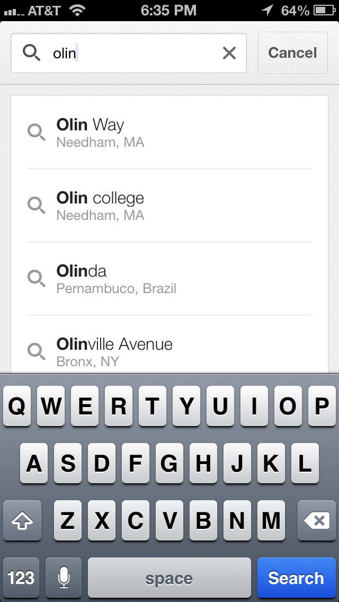
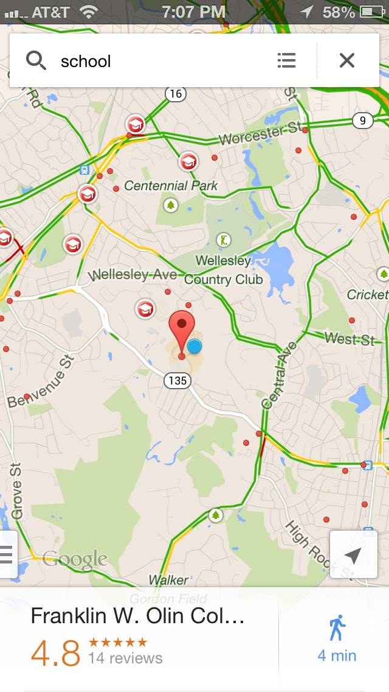
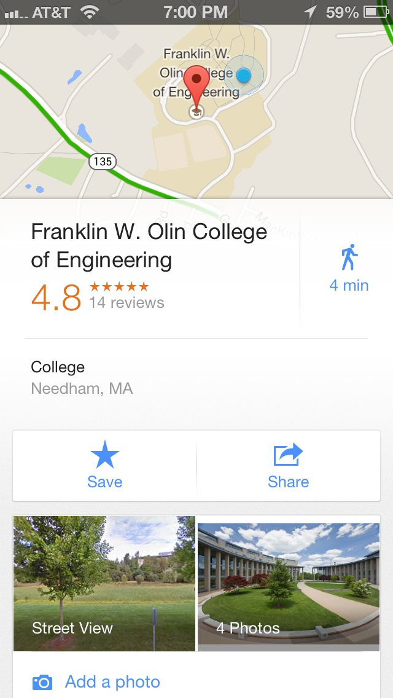
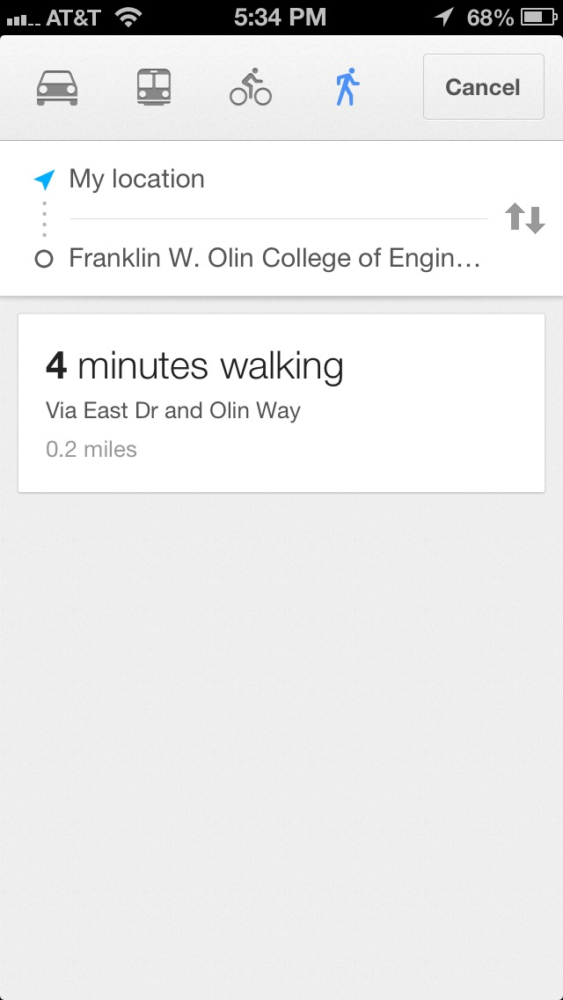

Inspiration: Google Maps for Mobile
By Morgan Zhu
The mobile version of Google Maps is a good example of a tool which cleanly and effectively accomplishes a number of distinct yet related tasks. The user may use the search bar to identify a location either by name or address. This type of search is particularly relevant to our service as some rooms may be more commonly be referred by names (Crescent Room or Auditorium). Furthermore, users can also use keywords to find all nearby businesses of specific type, such as ‘restaurant’ or ‘school.’ This type of filtering may be useful to help users identify all the rooms which fit their needs. 
In addition, Google Maps also allows users to scroll through the map and manually select a point of interest. When an item is selected, an overlay with information about the location appears. A similar type of navigation could also allow users to browse through available rooms and quickly identify its features. One downside to Google’s particular implementation, however, is that the obscures much of the screen, which is likely a consequence of the smaller screen on mobile devices. Since we do not have the same limitation, our service should attempt to make this information available as unobtrusively as possible.
Finally, Google Maps accommodates a user’s natural workflow by allowing a user to navigate to a location with one tap. Similarly, for room reservation, a user should immediately be able to submit a request after they’ve identified an available room rather than follow a separate process.
